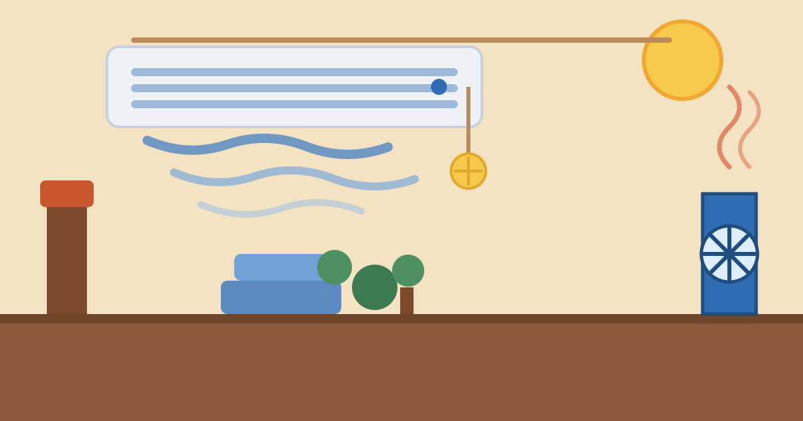

How Do Air Conditioners Cool a Room?

On a hot afternoon you press a button on the remote, and within minutes the room feels different. The sticky air turns cool and dry, and the heat outside seems to belong to another world. Behind that change is one clever idea, repeated over and over by the quiet white box on your wall.
The short answer is that an air conditioner does not create cold air. Cold is not a thing you can make. What it does is move heat: it picks up the heat from inside your room and carries it outside, again and again, until the room feels cool. The machine is really a heat-moving machine, and once you see that, everything else about it makes sense.
The Short Answer: It Moves Heat, It Does Not Make Cold
Think of a sponge soaking up water from a table. The sponge does not destroy the water — it carries it somewhere else and squeezes it out. An air conditioner treats heat the same way. Inside your room it soaks up heat into a special fluid, then carries that heat outside and gets rid of it, before coming back for more.
Two things make this possible. The first is that heat always flows from warmer places to cooler places, never the other way round on its own — opening a window to even warmer air outside cannot cool a warm room. The second is a special fluid called refrigerant, which turns from liquid to gas and back again at temperatures that suit a living room. When it evaporates, it soaks up a lot of heat; when it condenses back into a liquid, it releases that heat. The air conditioner keeps that fluid running in a loop, and that loop is the whole trick.
The Refrigerant Cycle in Four Steps
The loop has four jobs. Step one happens in the indoor unit, the box on your wall. A fan blows warm room air across cold coils filled with liquid refrigerant. The refrigerant boils into a gas at a low temperature, and as it does, it soaks up heat from the air. The air that comes out is cooler and drier — the cool breeze you feel.
Step two is the compressor, usually sitting in the outdoor unit. It squeezes the refrigerant gas, packing it tightly. Squeezing a gas makes it hotter — a bicycle pump warms up in your hand for the same reason. Now the gas is much hotter than the air outside, which is exactly what the machine wants: heat can now flow out of it into the outdoor air, even on a hot day.
Step three happens in the outdoor unit's coils. A fan blows outdoor air across the hot, compressed gas, and the heat escapes outside. As it loses heat, the gas cools down and condenses back into a liquid, still under high pressure. Step four is the expansion valve, a narrow opening between the units. When the liquid passes through it, the pressure drops suddenly, it gets very cold again, and it is ready to soak up heat from your room once more. The cycle then repeats, hundreds of times an hour, quietly and without pause.
The Two Boxes — Indoor and Outdoor Units
That is why a split air conditioner comes as two boxes joined by two thin copper pipes. The indoor unit holds the cold coils and the fan that blows cool air into your room. The outdoor unit holds the compressor, the hot coils and a fan that throws the heat away. One pipe carries the cool liquid in, the other carries the warm gas out.
Put your hand near the outdoor unit on a summer day and you will feel warm air blowing out of it. That is your room's heat, being dumped outside. It is also why blocking the outdoor unit — with plants, boxes, or a wall built too close — makes the air conditioner struggle. The heat has nowhere to go, so the whole loop slows down.
A window air conditioner works on the same cycle, but with the two halves joined into one box in the window frame. The front half faces your room, the back half faces outside. Same physics, just packed into a single unit.
Why Your Air Conditioner Drips Water
On a humid day you may notice water dripping from a small pipe on the wall. That is normal. Warm air holds water vapour, and when that air passes over the cold indoor coils, the vapour condenses into liquid — the same way a cold glass gets wet on the outside on a summer day.
This is the machine's second job, and it matters as much as cooling: it dries the air. Humid air feels sticky even at a moderate temperature, so a room often feels much cooler once some moisture has been removed. The collected water drains away through a small pipe. If that pipe blocks, water can back up and drip inside the room — one of the most common reasons to call a technician.
Why Some Rooms Stay Warm
If the machine runs all day and the room still feels warm, one of a few things is probably wrong. The most common is size: a machine too small for the room cannot move heat fast enough to keep up with the heat coming in through windows and walls. A room with large sunny windows or a gap under the door will fight the machine all day.
A dirty filter is the next suspect. The indoor unit's filter catches dust, and when it clogs, less air reaches the cold coils, so less heat gets picked up. Cleaning the filter every few weeks in summer is probably the easiest way to keep an air conditioner working well, and most people forget to do it.
A third cause is the thermostat setting itself. Setting the remote to 16 degrees does not cool the room faster — the machine works at one speed, and a very low setting only makes it run longer and use more electricity. A setting around 24 to 26 degrees is usually comfortable and far cheaper to run.
Common Mistakes
The first mistake is thinking the air conditioner makes cold air. It moves heat out, and understanding that helps you help it: keep hot air out by closing curtains on sunny windows, and let the heat escape by keeping the outdoor unit clear.
The second mistake is switching the machine off and on all day. Every start-up makes the compressor work hard, and a room heats up again quickly when the machine stops. It is usually cheaper and more comfortable to let it run steadily at a moderate setting than to blast it in short bursts.
The third mistake is never cleaning the filter or the outdoor unit. Dust is the slow enemy of every air conditioner: it blocks airflow, forces the compressor to work harder, and can shorten the life of the whole machine. A few minutes of cleaning a month is cheaper than a repair.
Frequently Asked Questions
Does an air conditioner bring in fresh air from outside?
No, in most home units it does not. It cools and dries the air already inside the room. That is why a room can feel stuffy after hours with the windows closed — the air is cool, but it is the same air going round and round. Opening a window for a few minutes lets fresh air in, though it also lets some heat back in.
Why does my air conditioner blow warm air sometimes?
At the very start the coils are still warm, so the first air feels ordinary. If warm air keeps coming, the usual causes are a dirty filter, a blocked outdoor unit, or low refrigerant because of a leak. A leak is the one case that needs a technician — refrigerant is not something a home user can top up safely.
How much electricity does an air conditioner use?
It is one of the hungriest appliances in a home, because the compressor works hard. A typical split unit uses roughly 1 to 1.5 kilowatts while running — similar to a powerful microwave running all afternoon. A moderate temperature setting, a clean filter and shaded windows cut the bill more than any other trick.
Conclusion
An air conditioner is a heat-moving machine: a special fluid boils inside your room, soaking up heat, gets squeezed until it is hotter than the outdoor air, and then dumps that heat outside — over and over, all day long. Along the way it dries the air too, which is why a cooled room feels so comfortable. Keep the filter clean, keep the outdoor unit clear, and set a sensible temperature, and the quiet white box will keep doing its job for years.